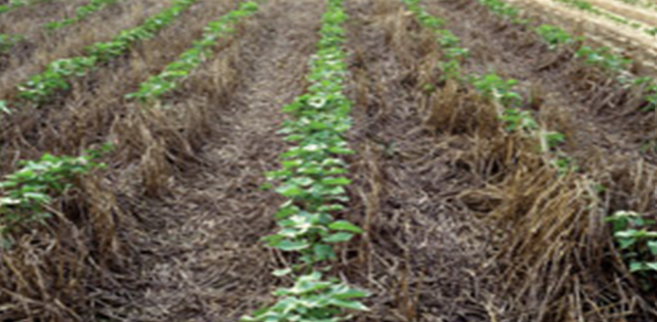
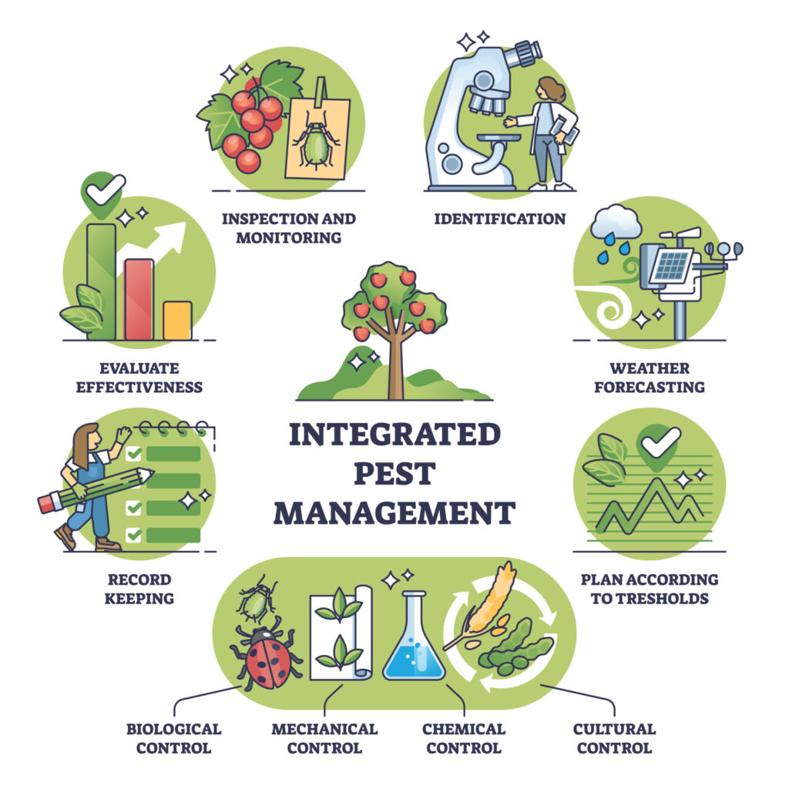
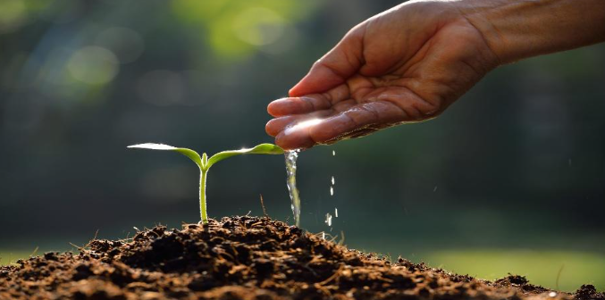
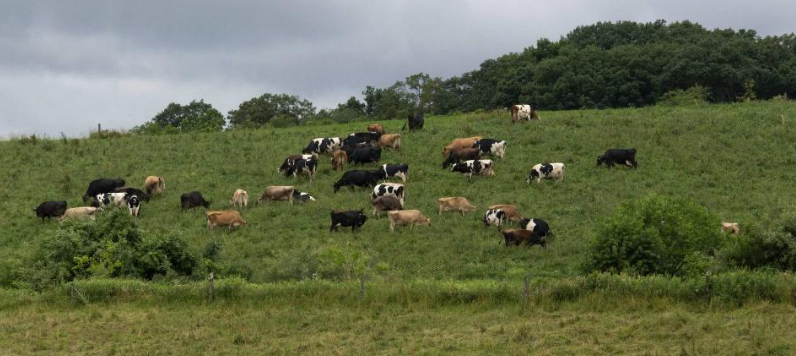
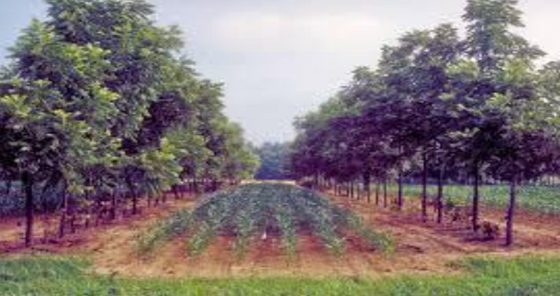

Key Sustainable Practices Gaining Ground in Kentucky
1. Conservation Tillage and Cover Cropping
Conservation tillage implies that the farmers cultivate less soil, which helps preserve it in good condition and retain natural matter within the soil. When the soil is not planted, farmers plant cover crops like winter rye, crimson clover, and hairy vetch on the soil to ensure that the soil remains safe. They prevent the washing of soil, aid the movement of nutrients among plants and soil and keep small life in the soil alive (CTIC, 2022). According to the Kentucky Soil Health Coalition (2023), the farms which cultivate cover crops and less often use tilling experience improved water absorption into the soil and the well-developed structure of the soil.
In Bourbon and Fayette Counties, for example, many producers participating in the Kentucky Soil Health Partnership have transitioned to no-till systems and observed a 15-25% reduction in erosion losses.
2. Integrated Pest Management (IPM)
Source: Integrated Pest Management (IPM), (2025)
Traditional pest control often depends on frequent pesticide applications. IPM takes a knowledge-based approach, integrating multiple tactics such as biological control, cultural practices, and selective pesticide use to minimize pest damage while reducing chemical inputs (Ehler, 2020).
The University of Kentucky's IPM Program provides farmers with scouting services, pheromone traps, and training in pest identification. This allows growers to make informed decisions about when and how to apply pesticides, often reducing application frequency by up to 40%. This approach not only protects beneficial insects like bees and lady beetles but also cuts input costs (UK Extension, 2024).
3. Efficient Water and Nutrient Management
Source: Hafren Dyfrdwy Annual Performance Report (2018)
Kentucky's variable rainfall patterns alternating between heavy storms and dry spells make water management a pressing concern. Farmers are increasingly adopting drip irrigation systems, moisture sensors, and variable-rate technology to optimize irrigation and fertilizer use.
The University of Kentucky's Water Quality Extension Initiative (2024) promotes soil testing and nutrient management plans to prevent nutrient leaching and runoff into rivers such as the Kentucky River, Licking River, and Green River basins. These programs help farmers apply only the nutrients that crops need, reducing costs and protecting water quality (USDA NRCS, 2023).
4. Rotational Grazing and Livestock Integration
Source: agriculturediary.com
Livestock production is vital to Kentucky agriculture, and rotational grazing the strategic movement of livestock between pastures has become a cornerstone of sustainable livestock management. This system allows grasses to recover, improves forage quality, and reduces soil compaction (Tittonell, 2021).
According to research from the Kentucky Beef Network (2023), producers using rotational grazing have seen up to 25% higher forage yields and lower veterinary costs. Integrating livestock with crop production also enhances nutrient cycling, as manure returns organic matter to the soil.
5. Diversified Farming and Agroforestry
Source: Thuận Sarzynski, (2018)
Diversification reduces risk and strengthens ecological balance. Kentucky farmers are incorporating agroforestry (combining trees with crops or livestock), pollinator strips, and mixed cropping systems. These measures support biodiversity, provide habitat for beneficial organisms, and generate additional income streams through timber, honey, or specialty products (Gomiero, 2018).
Programs like the NRCS Conservation Stewardship Program (CSP) offer financial incentives for farmers implementing these practices, encouraging more widespread adoption (USDA NRCS, 2023).
Table 1. Common Sustainable Practices in Kentucky and Their Benefits
| Practice | Environmental Benefit | Economic Benefit | Example in Kentucky |
|---|---|---|---|
| Cover Cropping | Reduces erosion and increases soil organic matter | Lowers fertilizer costs and enhances yield | Used widely in Bourbon & Fayette Counties |
| Conservation Tillage | Protects soil structure and reduces CO₂ emissions | Cuts fuel and labor costs | Adopted in western Kentucky corn and soybean fields |
| Rotational Grazing | Improves pasture recovery and reduces runoff | Extends grazing season and cuts feed costs | Kentucky Beef Network farms |
| Drip Irrigation | Conserves water and prevents nutrient leaching | Improves crop quality and reduces pumping costs | Specialty crop growers in Central KY |
| Integrated Pest Management | Protects beneficial insects and pollinators | Reduces pesticide expenses | Statewide through UK IPM Program |
Source: University of Kentucky Cooperative Extension Service (2024).